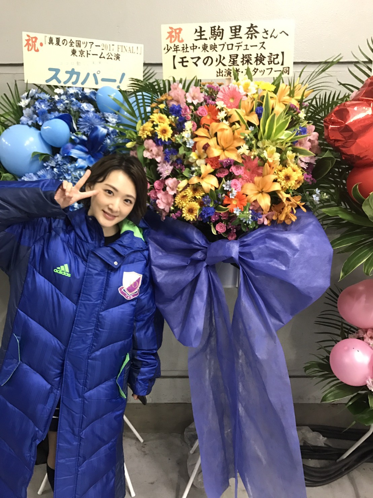
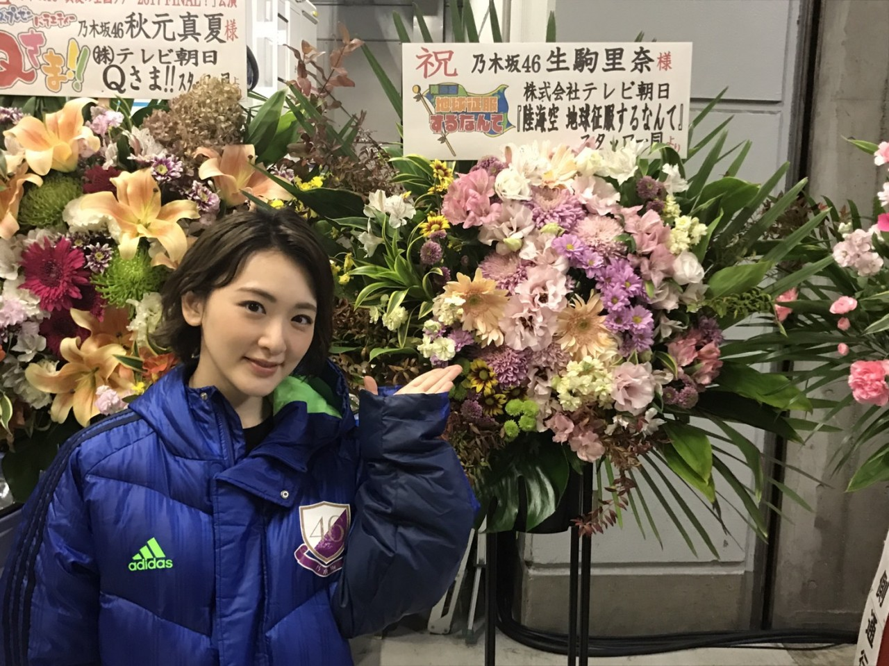

| 2017/11 09 Thu | 生駒里奈 やっぱり板の上がいちばん好きだ。 |
生駒です(*´꒳`*)
乃木坂46
真夏の全国ツアー2017
ファイナル公演は
はじめての東京ドーム2daysでした。
私は、東京ドームがどれだけ大きくて、パワーが必要かと言うのを約3年前に知りました。兼任の時にね。
あの時は、すごくすごく広くて怖くて、楽しいなんて思えなかった。
でも、46人で46として立ったあの舞台は、
すごくすごくキラキラしていて、楽しくて嬉しくて、
こんなにも冷静に乃木坂が好きな人がたくさんいる空間を見れたのは、
紛れもなく、
みんなで頑張って来た今までが正しかったからだと私は思います。
全ての人、全ての出来事に意味があると思いたい。
神様は必要な課題しかくれないから。
でも、自分から運命を変えられるチャンスだってある。
そんなことも乃木坂は教えてくれました。
6年間って、
小学1年の子が、小学6年生になる期間です。
赤ちゃんなら、喋れなかったり、歩けなかった小さな命が、
いつのまにか口が達者で、走り回り、自分の好きなものがある！と主張出来るようになります。
それくらい、私もこの6年間で成長出来たな！
これは自分を褒めてあげよう！！
珍しく！！笑
ひめとまりかのこともありますが、またそれは別で書きたいと思います。
ですが、彼女達の輝きは、素晴らしいものでした。
どこに行っても、絶対に大丈夫だって
それしか感じなかったです。
一旦、お疲れ様(*´꒳`*)
あとね、ほんとにこのメンバーじゃなかったらすぐ辞めてたよ。
奇跡のメンバーだよ。
やっぱり大好きだもん。のぎのぎちゃん。
このメンバーにあわせてくれてありがとう。
そして、乃木坂を通じて外の世界にも大切な人がたくさん出来た6年でした。
バナナマンさん、イジリーさん、オリラジさん、梨花さん
上げたらきりがない(*´꒳`*)(*´꒳`*)
舞台で出会った大切な人達。
こうなりたい！上手くなりたいと刺激を沢山頂きました(*´꒳`*)！

モマの火星探検記の皆さんからお花頂きました(*´꒳`*)
パパママお兄ちゃんお姉ちゃんが沢山いて嬉しいですみんな大好き！！
こち亀もそう、犬も、じょしらくもあさひなぐも
まだうまいとは言えないけど、歌唱力上がったのは舞台のお陰です！！
私の技術レベルを上げるのは舞台です(*´꒳`*)
テレビ、ラジオも私を鍛えてくれました！
もう、テレビで出来ないって泣きたくない。
あんな姿見ても何にも面白くないからね〜。

陸海空さんからもお花頂きました(*´꒳`*)
まさかこんなにもバズるテレビに出れるなんて！！
毎回どのアースも面白くて、これからも目が離せませんね☆
様々なことを思いながらありがとうと思った3時間のステージでした。
私は、パフォーマンスが好きです。
胸を張って言えます。
その為に、今後の人生をかけて、芸を磨く事をしていきたいです。
チャレンジする勇気をくれた乃木坂46に感謝です。
さぁ、、
深呼吸して
また明日からも頑張ります！！
へばなっ★彡